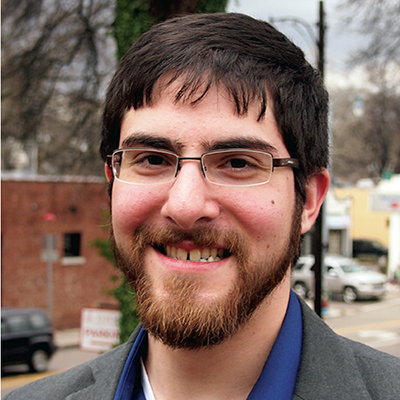

MD2K Team
MD2K's original NIH award included a consortium of 11 universities and university medical centers, headquartered at the University of Memphis. The 22 collaborating investigators collectively represented the best and brightest minds in data science, mobile sensing, and biomedical research. Unde the original NIH grant, the center was organized into four operating cores (data science research, training, administration, and consortium) with data science research efforts structured into four primary thrust areas: Thrust 1: Mobile Sensor Data to Information (MD2I), Thrust 2: Mobile Sensor Information to Knowledge (MI2K), Thrust 3: MD2K-Implementation, and Thrust 4: MD2K-Application.
Participating Institutions and Disciplines
Investigators

Gregory D. Abowd, Ph.D.
DSR Thrust 1
Dr. Abowd is a Regents' and Distinguished Professor in the School of Interactive Computing at the Georgia Institute of Technology. Dr. Abowd leads a research group interested in human-centered applications of mobile and ubiquitous computing technologies, with an emphasis on home and health. He established the Aware Home Research Initiative at Georgia Tech in the late 1990s and has also researched applications of technology in the classroom. He is an elected member of the ACM SIGCHI Academy and is an ACM Fellow. In 2009, he was awarded the ACM Eugene Lawler Humanitarian Award for his research efforts. More about Dr. Abowd.
Mustafa al’Absi, Ph.D.
Consultant; DSR Thrust 2; DSR Thrust 4-Smoking Cessation
Dr. al'Absi is a Max & Mary La Due Pickworth Chair and Professor of Behavioral Medicine, and founding Director of Duluth Medical Research Institute at University of Minnesota Medical School. Dr. al’Absi directs a research program focusing on neurobiology of stress, appetite regulation, and tobacco addiction. His programs have been funded by grants from the National Institute on Drug Abuse, the National Cancer Institute, the National Health, Lung and Blood Institute, and the American Heart Association. He has chaired various national and international scientific committees and functions, and has received several honorary awards, including the Neal E. Miller Young Investigator Award from the Academy for Behavioral Medicine Research and the Herbert Weiner Early Career Award from the American Psychosomatic Society. More about Dr. al'Absi.
 Nasir Ali, Ph.D.
Nasir Ali, Ph.D. Dr. Ali is an assistant research professor at University of Memphis. Prior to joining University of Memphis, he worked as a Postdoctoral fellow at University of Waterloo and Queens University (Canada). He received his Ph.D. from Ecole polytechnique de Montreal. His research interests include software maintenance, software quality, and mining large software repositories. His current work involves developing tools/algorithms to analyze mobile sensor data.
Emre Ertin, Ph.D.,
Sensor Platform Technologist;
DSR Thrust 1; Lead, DSR Thrust 4-Heart Failure
Dr. Ertin is an Associate Professor with the Department of Electrical and Computer Engineering at The Ohio State University. He received the B.S. degree in Electrical Engineering and Physics from Bogazici University in Turkey in 1992, the M.Sc. degree in Telecommunication and Signal Processing from Imperial College, U.K. in 1993, and the Ph.D. degree in Electrical Engineering from Ohio State in 1999. From 1999 to 2002 he was with the Core Technology Group at Battelle Memorial Institute. His current research interests are biomedical sensor design and statistical signal processing with application to sensor networks and mobile health. More about Dr. Ertin.
Deborah Estrin, Ph.D.
DSR Thrust 3
Dr. Estrin is a Professor of Computer Science at Cornell Tech in New York City and a Professor of Public Health at Weill Cornell Medical College. She is a member of the National Academy of Engineering, Fellow of ACM, AAAS, and IEEE. She is co-founder of the non-profit startup, Open mHealth. Estrin’s Small Data Lab @CornellTech develops new personal applications and infrastructure for individuals to harvest the small data traces they generate daily. She previously directed the Center for Embedded Networked Sensing at UCLA, a Science & Technology Center funded by the National Science Foundation (NSF). She is frequently listed as one of the most cited computer scientists. More about Dr. Estrin.
Deepak Ganesan, Ph.D.
Lead, DSR Thrust 1
Dr. Ganesan is Professor in the Department of Computer Science at the University of Massachusetts Amherst. Dr. Ganesan has worked for over a decade at the intersection of wireless sensing for health, wireless and mobile sensing, and low-power embedded systems, and designs novel systems based on strong theoretical foundations and grounded in real-world deployment and experimentation. He leads the Center for Mobile Health Sensing at UMass, and is on the advisory board of the Center for Personal Health Monitoring. More about Dr. Ganesan.
Marta Jankowska, Ph.D.
DSR Thrust 1
Dr. Jankowska earned her doctorate degree in Geography, specializing in Geographic Information Systems (GIS), spatial statistics, and health geography. As a health geographer, she is now a researcher in the Qualcomm Institute at UCSD. She is currently the PI of an NSF funded grant examining the relationship between the built food environment, obesity, and dietary behaviors. Her expertise is in spatial analytics including GIS, GPS, and spatial statistics as applied to health related problems.
Santosh Kumar, Ph.D.
Center Director; DSR Thrust 1; DSR Thrust 3; Executive Committee
Dr. Kumar is the Lillian and Morrie Moss Chair of Excellence Professor in the Department of Computer Science at the University of Memphis. He received his Ph.D. in Computer Science and Engineering from The Ohio State University in 2006, where his dissertation won a presidential fellowship. In 2010, the Popular Science magazine named him one of America’s ten most brilliant scientists under the age of 38 (called “Brilliant Ten”). In 2011, he chaired the “mHealth Evidence” meeting jointly organized by NIH, NSF, RWJF, and McKesson Foundation to establish evidence requirements for mHealth. In 2013, he was invited to meet with the NIH Director to advise him on NIH efforts in the area of mHealth and was invited to the White House to give a talk on the future of Biosensors. In 2014, he co-organized and co-chaired the NSF-NIH Workshop on Computing Challenges in Future Mobile Health (mHealth) Systems and Applications. More about Dr. Kumar.
Cho Lam, Ph.D.
DSR Thrust 2; DSR Thrust 4-Smoking Cessation
Dr. Lam is a Research Associate Professor in Population Health Sciences at the University of Utah. He formerly was at Rice University. Dr. Lam’s research focuses on applying ecological momentary assessment (EMA) and mobile health (mHealth) technologies to tobacco use and cessation research. Specifically, Dr. Lam is interested in using EMA/mHealth technologies to detect situational and intrapersonal antecedents that are predictive of smoking lapse, alert smokers about these high-risk antecedents to smoking, and deliver just-in-time intervention. Dr. Lam’s work is supported by the American Cancer Society, the National Cancer Institute, and the Cancer Prevention and Research Institute of Texas.
Benjamin M. Marlin, Ph.D.
DSR Thrust 1; DSR Thrust 2
Dr. Marlin joined the College of Information and Computer Sciences at the University of Massachusetts Amherst in 2011. There, he co-directs the Machine Learning for Data Science lab. His current research centers on the development of customized probabilistic models and algorithms for time series with applications to the analysis of electronic health records and mobile health data. His recent work includes probabilistic models for analyzing wireless ECG data, detection of cocaine use from wireless ECG, hierarchical activity recognition from on-body sensor data with applications to smoking and eating detection, and methods for mitigating lab-to-field generalization loss in mobile health studies. Marlin is a 2014 NSF CAREER award recipient and a 2013 Yahoo! Faculty Research Engagement Program award recipient. His research has also been supported by the National Institutes of Health, the Patient-Centered Outcomes Research Institute, and the US Army Research Laboratory. Prior to joining UMass Amherst, Marlin was a fellow of the Pacific Institute for the Mathematical Sciences and the Killam Trusts at the University of British Columbia. He completed his PhD in machine learning in the Department of Computer Science at the University of Toronto. More about Dr. Marlin.
Clay Marsh, MD
DSR Thrust 4-Congestive Heart Failure
Dr. Marsh is the Vice President and Executive Dean for Health Sciences at West Virginia University. He leads the academic health sciences center of WVU, which includes five schools – dentistry, medicine, nursing, pharmacy and public health – and numerous allied health programs and clinical operations around the state. A national leader in personalized medicine and in pulmonary and critical care medicine, Dr. Marsh’s efforts have focused on determining how to help individuals stay healthy and how to create ecosystems to make this easy. He holds two degrees from WVU: an undergraduate degree in biology (1981) and a medical degree (1985). From 1985 to 2015 he was at The Ohio State University, where he began as a resident in internal medicine, and, as a faculty member held a wide range of teaching, clinical, research, and administrative roles at Ohio State’s Wexner Medical Center. In his last role at OSU, he was vice dean for innovation in the College of Medicine and established OSU’s IDEA Studio in Healthcare and Design. Dr. Marsh’s research has focused on defining the underlying mechanisms that determine health and disease. His research interests include the molecular regulation of longevity and epigenetic controls of aging. He holds more than 20 patents or patent disclosures. He has mentored more than 50 MD, MD/PhD and PhD doctoral students, post-doctoral researchers and junior faculty, and has published more than 140 papers in peer-reviewed journals. More about Dr. Marsh.
Susan Murphy, Ph.D.
DSR Thrust 2
Dr. Murphy is the Professor of Statistics and Computer Science, and the Radcliffe Alumnae Professor at the Radcliffe Institute, Harvard University. She directs the Statistical Reinforcement Learning Lab at Harvard University. Her research concerns clinical trial design and the development of data analytic methods for informing multi-stage decision making in health. In particular for (1) constructing individualized sequences of treatments (a.k.a., adaptive interventions) for use in informing clinical decision making and (2) constructing real-time individualized sequences of treatments (a.k.a., Just-in-Time Adaptive Interventions) delivered by mobile devices. Murphy has developed a formal model of this decision-making process and an innovative design for clinical trials called Sequential Multiple Assignment Randomized Trial (SMART) that allow researchers to optimize adaptive interventions. In 2016, she was elected a member of the National Academy of Sciences, in 2014, she was elected a member of the National Academy of Medicine, and in 2013, she was selected as a MacArthur Fellow. More about Dr. Murphy.
Inbal (Billie) Nahum-Shani, Ph.D.
DSR Thrust 2; DSR Thrust 4-Smoking Cessation
Dr. Nahum-Shani is an Assistant Professor at the Institute for Social Research, University of Michigan. Her research integrates Occupational Health Psychology and Quantitative Psychology to (a) develop technology-based supportive interventions for reducing stress and preventing problem behaviors among young adults and employed individuals; and (b) building adaptive interventions that are delivered via mobile devices and that provide support in real-time to people as they go about their daily lives (Just-in-Time Adaptive Interventions). She is a member of the Statistical Reinforcement Learning Lab at the University of Michigan. More about Dr. Nahum-Shani.
 James M. Rehg, Ph.D.
James M. Rehg, Ph.D.
DSR Core Lead; DSR Thrust 1; Lead, DSR Thrust 2; Executive Committee
Dr. Rehg (pronounced 'ray") is a Professor in the School of Interactive Computing at the Georgia Institute of Technology, where he is co-Director of the Computational Perception Lab (CPL) and Director of the Center for Behavioral Imaging. He received his Ph.D. from CMU in 1995 and worked at the Cambridge Research Lab of DEC (and then Compaq) from 1995-2001, where he managed the computer vision research group. He received an NSF CAREER award in 2001 and a Raytheon Faculty Fellowship from Georgia Tech in 2005. He and his students have received best student paper awards at ICML 2005, BMVC 2010, Mobihealth 2014, and Face and Gesture 2015, and a 2013 Method of the Year Award from the journal Nature Methods. Dr. Rehg serves on the Editorial Board of the Intl. J. of Computer Vision, and he served as the Program co-Chair for ACCV 2012 and General co-Chair for CVPR 2009, and will serve as Program co-Chair for CVPR 2017. He has authored more than 100 peer-reviewed scientific papers and holds 25 issued US patents. His research interests include computer vision, machine learning, pattern recognition, and robot perception. Dr. Rehg is the lead PI on an NSF Expedition to develop the science and technology of Behavioral Imaging, the measurement and analysis of social and communicative behavior using multi-modal sensing, with applications to developmental disorders such as autism. He also serves as the Deputy Director of the NIH Center of Excellence on Mobile Sensor Data-to-Knowledge (MD2K). More about Dr. Rehg.
Vivek Shetty, DDS
Training Core Lead; Executive Committee
Dr. Shetty is a Professor of Oral & Maxillofacial Surgery at the University of California, Los Angeles, where he also serves as an Assistant Vice-Chancellor for Research. A clinician-scientist by training, Dr. Shetty’s research interests are defined by the significant and disproportionate burden of traumatic injury and its sequelae in vulnerable populations and sited at the intersection of discovery science and patient care. Through synergistic, transdisciplinary collaborations with bioengineers, computer scientists, psychologists, and systems biologists, he develops technology-based strategies to facilitate timely recognition and personalized interventions for trauma-related psychopathology. His research program has been funded continuously by NIH since 1993 and recognized by several awards including the OMSF 2011 Research Recognition Award for Outstanding Contributions. Dr. Shetty has published over 145 research articles, books chapters and books and serves as an editorial consultant and scientific reviewer for numerous specialty journals and research organizations. A great admirer of the American university system, he has been deeply involved in academic governance, having served as Chair of the UCLA Academic Senate, as a member of the UC-wide academic senate, and now, as a member of UCLA’s Committee on Academic Personnel that is responsible for the review of all significant personnel actions. Dr. Shetty has been a core faculty of the NIH’s mHealth Training Institutes since its inception in 2011 and is now Principal Investigator of the UCLA mHealth Training Institutes funded by NIH/OBSSR (at NIH). More about Dr. Shetty.
Ida Sim, M.D., Ph.D.
Consortium Core Lead; DSR Thrust 3; DSR Thrust 4-Congestive Heart Failure; Executive Committee
Dr. Sim is a is Professor of Medicine, Co-Director of Biomedical Informatics at the University of California, San Francisco’s Clinical and Translational Sciences Institute. She is also co-founder of Open mHealth, a non-profit organization that is breaking down barriers to mobile health app and data integration through an open software architecture. Dr. Sim received her M.D. and her Ph.D. in Medical Informatics from Stanford University, and is an international leader in informatics for health care and clinical research. Her research work is focused on knowledge-based technologies for evidence-based practice, especially in the ontological representation of clinical trials. In policy work, Dr. Sim was the founding Project Coordinator of the World Health Organization's International Clinical Trials Registry Platform, which sets global standards on clinical trial registration and reporting. She is a Fellow of the American College of Medical Informatics, and a member of the American Society for Clinical Investigation. She is also a practicing primary care physician. More about Dr. Sim.
Bonnie Spring, Ph.D.
DSR Thrust 2; Lead, DSR 4-Smoking Cessation
Dr. Spring is a Professor of Preventive Medicine, Psychology and Psychiatry and also the Director of Northwestern University’s Center for Behavior and Health. She also serves as the Chief of Behavioral Medicine in Preventive Medicine, Co-Program Leader for Cancer Prevention and Director of Team Science, NUCATS. Her research interests focus on interventions to promote healthful lifestyle change, including the development and testing of treatments that incorporate technology. Her research on behavioral risk factors (smoking, poor-quality diet, physical inactivity, obesity) has been supported continuously since 1976, chiefly by the National Institutes of Health, American Cancer Society, American Heart Association, and the U.S. Department of Veterans Affairs. She is past president of the Society of Behavioral Medicine (SBM) and a recipient of SBM’s Distinguished Research Mentor and Research to Practice Translation awards. An elected fellow of the American Psychological Association, American Psychological Society, and Academy of Behavioral Medicine Research, she also holds the American Board of Professional Psychology's Diplomat in Clinical Health Psychology. She is founding editor and editor-in-chief of the journal Translational Behavioral Medicine: Practice, Policy, Research. A member of the American Psychological Association’s Advisory Steering Committee to Develop Treatment Guidelines, she also founded and chairs the NIH-sponsored multidisciplinary Council for Training in Evidence-Based Behavioral Practice. More about Dr. Spring.
Mani Srivastava, Ph.D.
Lead, DSR Thrust 3
Dr. Srivastava is a Professor of Electrical Engineering and Computer Science at the University of California, Los Angeles. His research is broadly in the area of networked human-cyber-physical systems, and spans problems across the entire spectrum of applications, architectures, algorithms, and technologies. His current interests include issues of sensing, privacy, security, data quality, and variability in the context of applications in mHealth and sustainability. He is a deputy director of NSF Expeditions on Variability and is the lead investigator on an NSF Cyber Physical Systems Frontier Project called RoseLine. His works have been cited extensively (over 30,000 times) and have won several best paper awards. He has served as editor-in-chief of IEEE Transaction on Mobile Computing and the ACM Mobile Computing and Communication Review. He is a Fellow of IEEE. More about Dr. Srivastava.
David W. Wetter, Ph.D.
DSR Thrust 2; DSR Thrust 4-Smoking Cessation
Dr. Wetter is the Jon M. and Karen Huntsman Presidential Professor in Population Health Sciences and the Huntsman Cancer Institute at the University of Utah. He also directs the Center for HOPE (Health Outcomes and Population Equity) at Utah. Prior to that, he was at Rice University and the University of Texas MD Anderson Cancer Center. His work is targeted at eliminating inequities in health-related behavior through translational research. Specific research foci include: theoretical models of addictive and cancer risk behaviors; the development and evaluation of theoretically-based interventions; and, translational research to implement and disseminate those interventions in real world settings. His research spans the continuum from cells to society, and focuses on high-risk and underserved populations, with a major focus on low socioeconomic status individuals, minorities, and women. Dr. Wetter has an extensive NIH-funded grant portfolio and over 180 peer-reviewed publications. His research has received awards from the Society of Behavioral Medicine, American Society for Preventive Oncology, the Health Psychology Division of the American Psychological Association, and others.
Software Team
Simona Carini, M.A.
DSR Thrust 3
Ms. Carini is a Medical Information Science researcher at the University of California, San Francisco (UCSF) and Data Scientist for Open mHealth. She received her B.A. from the University of the Sacred Heart (Milan, Italy) and M.A. from Mills College, CA. Her interest in and experience with the various aspects of clinical trials started during her training and work as a registered nurse in Italy and continued through the years she spent working in the pharmaceutical and biotech industry and then Dr. Sim's research lab. Most recently, in her role of data scientist at Open mHealth, she has been working on digital health data modeling. More about Ms. Carini.
 Timothy W. Hnat, Ph.D.
Timothy W. Hnat, Ph.D.
DSR Thrust 3
Dr. Hnat is Chief Software Architect for the MD2K Center. He previously served as Assistant Professor of Computer Science at the University of Memphis. His research interests cover several areas of the construction and evaluation of distributed systems, including compilers, programming languages, networking, and wireless sensor networks. He seeks to harness the potential of distributed systems to affect and interact with the physical world to address mHealth issues. More about Dr. Hnat.
 Anandatirtha Nandugudi, Ph.D.
Anandatirtha Nandugudi, Ph.D.Dr. Nandugudi designs, develops, and validates mobile health (mHealth) biomarkers along with a team of graduate students at the MD2K Center of Excellence. He has a rich research background in the areas of mobile computing, networking and sensor networks, and has published several recognised works in these areas in proceedings such as UbiComp. In addition to leading the implementation of newly developed mHealth biomarkers in Cerebral Cortex and mCerebrum, he is volunteering his services to standardise health metadata as part of the IEEE P1752 working group to enable interoperability and wider adoption of mHealth biomarkers.
.
Affiliated Members
William T. Abraham, M.D., FACP, FACC, FAHA, FESC, FRCPE
Lead, DSR Thrust 4- Congestive Heart Failure
Dr. Abraham is Chair of Excellence in Cardiovascular Medicine, Professor of Internal Medicine, Chief of the Division of Cardiovascular Medicine, and Deputy Director of the Davis Heart and Lung Research Institute at The Ohio State University College of Medicine. He spends the majority of his clinical time managing heart failure patients in both inpatient and outpatient settings. Dr. Abraham has been recognized as one of the “Best Doctors in America” for twelve consecutive years. His research interests include hemodynamic and neurohormonal mechanisms in heart failure, sleep disordered breathing in heart failure, and clinical drug and device trials in heart failure and cardiac transplantation. Dr. Abraham has participated as a site Principal Investigator in more than 100 multicenter clinical drug and device trials. He has also served as national or international Principal Investigator and on the Executive or Steering Committees of more than 30 multicenter clinical drug and device trials. Dr. Abraham is the author of more than 700 original papers, abstracts, book chapters, and review articles. He also is a Fellow of the American College of Cardiology, the American Heart Association and the European Society of Cardiology. More about Dr. Abraham.
Nabil Alshurafa, Ph.D.
DSR Thrust 2, DSR Thrust 4-Smoking Cessation
Dr. Alshurafa is an Assistant Professor of Preventive Medicine and of Computer Science at Northwestern University. He received his Ph.D., M.S., and B.S. in Computer Science at UCLA. Dr. Alshurafa currently heads the Northwestern HAbits Lab-The Health Aware bits Lab-which combines research in preventive medicine and computer science. Alshurafa’s research interests are in the area of mobile health, behavioral medicine, data analytics, algorithm design, HCI, and embedded systems. His research focuses on testing and advancing the limits of mobile sensing in understanding and improving people’s habits of eating, physical activity and sleep targeting health disparate communities afflicted with obesity and cardiovascular disease. Find out more about Dr. Alshurafa.
Duen Horng (Polo) Chau, Ph.D.
DSR Thrust 2
Dr. Chau is an Assistant Professor at the Georgia Institute of Technology's School of Computational Science and Engineering and the Associate Director of the Master of Science in Analytics program. Dr. Chau holds a Ph.D. in Machine Learning and a Master's in HCI, both from Carnegie Mellon, and has been working at the intersection of HCI and data mining, to create scalable, interactive tools for big data analytics. Dr. Chau's thesis on bridging the gap between HCI and data mining to make sense of large network data was recognized with Carnegie Mellon's Distinguished Computer Science Dissertation Award, Honorable Mention. In addition, he is the only two-time Symantec fellow. He contributed to the PEGASUS Project's peta-scale graph-mining system, which won an Open Source Software World Challenge Silver Award. Dr. Chau's NetProbe auction fraud detection research has been the topic of stories by The Wall Street Journal, CNN, TV and radio. His Polonium malware detection technology protects 120 million people worldwide. His work on detecting fake reviews won a best paper award at SDM '14. He works closely with Symantec, Yahoo and eBay. More about Dr. Chau.
David E. Conroy, Ph.D.
DSR Thrust 2; DSR Thrust 4-Smoking Cessation
Dr. Conroy is a Professor of Kinesiology and (by courtesy) Human Development and Family Studies The Pennsylvania State University and Adjunct Professor of Preventive Medicine at the Northwestern University Feinberg School of Medicine. Dr. Conroy’s research interests involve competence and health across the lifespan, with an emphasis on motivation for physical activity and sedentary behavior. His current work emphasizes dual-process theories and uses ecological momentary assessments to expose time-varying processes that can be targeted to improve motivation, behavior, and health. His work has been funded by the National Institute of Mental Health, National Institute of Child Health and Development, and the National Institute on Aging. More about Dr. Conroy.
Karen Hovsepian, Ph.D.
DSR Thrust 1
Dr. Hovsepian is an Assistant Professor of Computer Science at Troy University, specializing in Machine Learning and Data Mining. Dr. Hovsepian received his M.S. and Ph.D. in Computer Science from New Mexico Tech, and, since then, has focused on utilizing the predictive and explanatory power of Machine Learning to address key problems in mobile health, bioinformatics, and finance. At MD2K, Dr. Hovsepian leads the team tasked with building an accurate inference model of mental stress -- a key factor in conditions and illnesses of primary interest to MD2K researchers. Among his other current research interests is the application of mobile computing to road safety and comfort via development/implementation of Computer Vision and Pattern Recognition algorithms on mobile sensing platforms attached to cars and drivers.
 Moushumi Sharmin, Ph.D.
Moushumi Sharmin, Ph.D.
DSR Thrust 2; DSR Thrust 4-Smoking Cessation
Dr. Sharmin is a Assistant Professor of Computer Science at the Western Washington University in Bellingham, Washington. Her research focuses on human-computer interaction, privacy-aware, intelligent information management and retrieval, and visualization of information. Currently she is investigating novel techniques that support sense-making, pattern identification, and decision making for large scale health data and privacy challenges emerging from the use of lightweight, wearable sensors. She is one of the inventors of the U.S. patent on in-context display of presentation search results, filed by IBM's T.J. Watson Research Center. She is a NIH Mobile Health Scholar, fellow of the American Association of University Women, a finalist of the Google Anita Borg Scholarship, and recipient of the Saburo Muroga Fellowship. More about Dr. Sharmin.
Edison Thomaz, Ph.D.
DSR Thrust 1; DSR Thrust 4-Smoking Cessation
Dr. Thomaz is a Research Assistant Professor in the ECE department at The University of Texas at Austin, with an appointment in the School of Information. His research is in Activiomics, a new discipline that applies computational methods towards sensing, recognizing and modeling the entire span of people's everyday life activities and context, from individual gestures to life patterns and routines. By enabling the measurement of human behaviors at a finely-grained level of detail and pairing them with bio-physiological signals obtained with environmental and wearable sensors, his work aims to provide a new technical foundation for applications and discoveries at the frontier of human health and behavior such as gene-environment interactions, predictive health from behavior markers, and personal health informatics. Research communities he contributes to include Mobile and Ubiquitous Computing, Activity Recognition, Machine Learning, and HCI. More about Dr. Thomaz.
Postdocs
 Roy Adams
Roy Adams
Johns Hopkins University
Mr. Adams is a Postdoctor Scholar in Computer Science at Johns Hopkins University. He worked with professor Ben Marlin at U.Mass as part of the Machine Learning for Data Science research group. He is broadly interested the inference and learning problems that arise when using probabilistic graphical models for complex prediction tasks and the application of such models to health and ecology. His current research is focused on developing structured prediction models for activity recognition in physiological sensor data.
Matteo Interlandi, Ph.D.
University of California, Los Angeles
Dr. Interlandi is a Postdoctor Scholar at the Computer Science Department of UCLA under the supervision of Professor Tyson Condie. He received his Ph.D. from the University of Modena and Reggio Emilia (Italy). Prior to join UCLA, he worked as a Research Associate at the Qatar Computing Research Institute (QCRI), and at the Florida Institute for Human and Machine Cognition (IHMC). His research focuses on distributed data management, large-scala data processing, and declarative specification of data-parallel computations.
Mr. Liao is currently a Postdoctor Scholar in Statistics at Harvard University. He previously worked at the University of Michigan under supervision of Professor Susan Murphy. As part of the Statistical Reinforcement Learning Lab lead by Prof. Murphy, his research focused on developing new experimental design and data analysis methods for developing high-quality mobile interventions (e.g. Just-in-Time Adaptive Interventions) in mobile health.
Tianchen Qian, Ph.D.
Harvard University
Dr. Qian is a Postdoctor Scholar at the Statistics Department of Harvard University under the supervision of Professor Susan Murphy. Before joining Harvard, he received his Ph.D. from Biostatistics Department at Johns Hopkins University. His research interests include semiparametric estimation for mobile health intervention problem, and estimation and design of clinical trials. More about Dr. Qian.
Ashley Walton, Ph.D.
Harvard University
Dr. Walton is a post-doctoral researcher under the supervision of Dr. Susan Murphy at Harvard University. She has also worked as a research lead and designer on mobile health projects with Dr. Lori Crosby at Cincinnati Children's Hospital. She earned her Ph.D. in Experimental Psychology from the University of Cincinnati in 2017. She received a Bachelor of Science Degree in Interaction Design and a Bachelors of Interdisciplinary Studies in Cognitive Science from the University of Cincinnati in 2011.
Feiyun Zhu, Ph.D.
University of Michigan
Dr. Zhu is a Postdoctor Scholar at the Statistics Department of UMich under the supervision of Professor Susan Murphy and Professor Ambuj Tewari. Before joining UMich, he received his Ph.D. from the Institute of Automation, Chinese Academy of Sciences (CASIA). His research interests focus on the actor-critic reinforcement learning for mobile health intervention problem, both in the online setting and the in the batch learning setting.
Executive Advisory Committee
Steven M. Dubinett, M.D.
Clinical and Translational Science Institute
University of California, Los Angeles
Dr. Dubinett is Director of the Clinical and Translational Science Institute at the University of California, Los Angeles. He also serves as Senior Associate Dean for Translational Research in the David Geffen School of Medicine at UCLA, Associate Vice Chancellor for Research and Chief of the Division of Pulmonary and Critical Care Medicine. Dr. Dubinett is a Professor of Medicine, Pathology & Laboratory Medicine, and Molecular & Medical Pharmacology. He is a member of the Jonsson Comprehensive Cancer Center, the Molecular Biology Institute and the California NanoSystems Institute. Dr. Dubinett built on his original discoveries relevant to inflammation in the pathogenesis of lung cancer to develop a translational research program that now utilizes these laboratory-based discoveries in the translational research and clinical environment. His studies focus on inflammation, immunity and epithelial mesenchymal transition in the pathogenesis of lung cancer. He earned his medical degree at Rutgers University and completed post-graduate medical and research training at UCLA and Massachusetts General Hospital. More about Dr. Dubinett.
Eric Fain, M.D.
Procyrion, Inc.
Dr. Fain is President and CEO of Procyrion, Inc., a medical device company based in Houston, Texas. Procyrion is developing a catheter-deployed micropump for the management of chronic heart failure. His responsibilities at Procyrion include building upon hte company's foundation of innovative technology, and overseeing the progression of product development leading to human clinical trials and commercialization of the company's novel and proprietary heart pump. Prior to joining Procyrion, Dr. Fain was Senior Vice President, Corporate Officer and Group President of Cardiovascular and Neuromodulation at Abbott Laboratories, which acquired st. Jude Medical in 2017. At the time of the acquisition, he was Group President at St. Jude Medical, where he had worked since 1997. He also worked as President of the company’s Implantable Electronic Systems Division and as President for the St. Jude Medical Cardiac Rhythm Management Division. He joined St. Jude Medical when it acquired Ventitrex, Inc., where he had worked since 1987. Dr. Fain received his medical degree from Stanford University School of Medicine and a Sc.B. degree in applied math and biology from Brown University.
Harry Shum, Ph.D.
Microsoft
Dr. Shum is Executive Vice President for Technology and Research at Microsoft. Dr. Shum is a fellow of both the Institute of Electrical and Electronics Engineers (IEEE) and the Association for Computing Machinery (ACM). He has served on the editorl board of the International Journal of Computer Vision and was a program chair for the International Conference of Computer Vision 2007. He has published more than 100 papers on computer vision, computer graphics, pattern recognition, statistical learning and robotics, and holds more than 50 U.S. patents. Dr. Shum joined Microsoft in 1996, and in 1999, helped start what is now known as Microsoft Research Asia. In 2007, he became a corporate Vice President responsible for Bing development. He holds a doctorate in robotics from the School of Computer Science at Carnegie Mellon University. More about Dr. Shum.
Victor J. Strecher, Ph.D.
School of Public Health
University of Michigan
Dr. Strecher is Director for Innovation and Social Entrepreneurship at the University of Michigan and Professor of Health Behavior and Health Education at the University of Michigan’s School of Public Health. Since 2012, he has served as Director for Innovation and Social Entrepreneurship, helping the university disseminate research to the real world with the goal of improving public health nationally and globally. He joined the UM faculty in 1995. He founded the Center for Health Communications Research and has been leading investigator on more than $45 million in grant-funded studies. With the university, Dr. Strecher founded HealthMedia Inc. in 1998, an Ann Arbor-based company that develops and disseminates award-winning tailored health interventions to millions of users. In 2008, HealthMedia Inc. was purchased by Johnson & Johnson. More about Dr. Strecher.
NIH/NSF Staff
Tiffani Lash, Ph.D.
MD2K Program Officer
Dr. Tiffani Bailey Lash serves as a Program Director/Health Scientist Administrator at the National Institutes of Health. She manages the research portfolios for the Biosensors, Platform Technologies, and mHealth programs at the National Institute of Biomedical Imaging and Bioengineering (NIBIB). Dr. Lash is also the Program Director for the NIBIB Point of Care Technologies Research Network, consisting of three centers charged with developing point-of-care diagnostic technologies through collaborative efforts that merge scientific and technological capabilities with clinical need.
Prior to her current position, Dr. Lash worked within the NIH’s science policy administration. During that time, she worked at the National Institute of General Medical Sciences and National Heart Lung and Blood Institute, as well as the NIH Office of the Director. Dr. Lash has been selected as a science policy fellow for both the American Association for the Advancement of Science (AAAS) and the National Academy of Engineering. She also has a background in small business innovation and intellectual property. Dr. Lash earned her Ph.D. in Physical Chemistry from North Carolina State University via a collaboration between the Departments of Chemistry and Chemical and Biomolecular Engineering. Her interdisciplinary research interests include microfluidics, biopolymers with controlled molecular architecture, and biosensor technologies.
 Wendy Nilsen, Ph.D.
Wendy Nilsen, Ph.D.
MD2K Lead Science Officer
Dr. Nilsen is Program Director, Smart and Connected Health in the National Science Foundation's (NSF) Directorate for Computer & Information Science & Engineering. The Smart and Connected Health program's goal is to seek improvements in safe, effective, efficient, equitable, and patient-centered health and wellness services through innovations in computer and information science, engineering and behavioral research. Doing so requires leveraging the scientific methods and knowledge bases of a broad range of computing and behavioral research perspectives. Prior to joining NSF, Dr. nilsen was a Health Scientist Administrator at the NIH Office of Behavioral and Social Sciences Research (OBSSR). Her scientific focus is on the science of human behavior and behavior change, including: utilizing mobile technology to better understand and improve health, adherence, the mechanisms of behavior change and behavioral interventions in patients with multiple chronic conditions in primary care. Prior to joining NIH in 2009, Dr. Nilsen was an Assistant Professor of Psychiatry (Psychology) at the University of Rochester School of Medicine and Dentistry. Wendy received her Ph.D. in clinical psychology from Purdue University.
Richard Conroy, Ph.D.
MD2K Science Officer
Dr. Conroy is a Program Leader for the Common Fund in Office of Strategic Coordination. The NIH Common FUnd addresses emerging scientific opportunities and challenges in biomedical research that no single NIH Institue of Center can address on its own. Previously, he was the Director of the Division of Applied Science and Technology (DAST) at the National Institute of Biomedical Imaging and Bioengineering (NIBIB), where he oversaw the institute’s portfolio of programs in biomedical imaging. While at NIBIB, he also served as a coordinator for the Common Fund Single Cell Analysis and 4D Nucleome Programs. Before joining NIBIB, Dr. Conroy was a researcher in the intramural program of the National Institute of Neurological Disorders and Stroke (NINDS), developing multimodal imaging agents for tracking cells in vivo and methods for characterizing and manipulating individual biomolecules in vitro in collaboration with the National Institute of Standards and Technology (NIST). He has a background in physics, biophysics, biotechnology and international management.
Elaine Collier, MD
MD2K Science Officer
Dr. Collier is a physician scientist who serves as Senior Advisor for Informatics and Clinical Research at the National Center for Advancing Translational Sciences (NCATS). NCATS was established in December of 2011 with a mission “to catalyze the generation of innovative methods and technologies that will enhance the development, testing, and implementation of diagnostics and therapeutics across a wide range of human diseases and conditions.” Prior to the establishment of NCATS, Dr. Collier served a similar role in the National Center for Research Resources. Previously, Dr. Collier was Acting Chief of the Clinical Immunology Branch and Chief of the Autoimmunity Section in the Division of Allergy, Immunology, and Transplantation at the National Institute of Allergy and Infectious Diseases. Dr. Collier is a Phi Kappa Phi graduate of Auburn University and an Alpha Omega Alpha graduate of the University of Alabama at Birmingham School of Medicine. She is a Fellow of the American College of Physicians, a member of the American Medical Informatics Association, and the Association for the Advancement of Science. She is board certified in internal medicine and in endocrinology and metabolic diseases. She is a member of the Senior Clinical Staff at the Clinical Center of the National Institutes of Health.
William (Bill) Riley, PhD
MD2K Science Officer
Dr. Riley is the Director of the Office of Behavioral and Social Sciences Research, and Chief of the Science of Research and Technology Branch, Behavioral Research Program in the Division of Cancer Control and Population Sciences at the National Cancer Institute. His research interests include behavioral assessment, psychosocial health risk factors, tobacco use/cessation, and the application of technology to preventive health behaviors and chronic disease management. He has been interested in applying new technologies, particularly mobile and wireless technologies, in behavioral measurement and intervention, and the potential of these technologies to assess and intervene adaptively, in the context of the behavior, and with broad reach and scalability. His research has included the use of mobile phones and other mobile computer devices to assess and intervene on tobacco use, dietary intake, physical activity, sleep, and medication adherence. He also is interested in the application of engineering and computer science methodologies to the behavioral sciences.
Mary Rodgers, Ph.D.
MD2K Science Officer
Dr. Rodgers is an advisor for the National Institute for Biomedical Imaging and Bioengineering at NIH. She received her BS and MS in Physical Therapy from the University of North Carolina at Chapel Hill, and PhD in Biomechanics at The Pennsylvania State University. Her rehabilitation biomechanics research was funded by the Veterans Administration Research & Development and NIH over the past 20 years. She serves as Advisor in the Extramural Science Program at the National Institute for Biomedical Imaging and Bioengineering (NIBIB). She is also George R. Hepburn Dynasplint Professor and Vice Chair of the Department of Physical Therapy & Rehabilitation Science at the University of Maryland School of Medicine.
Catherine M. Stoney, Ph.D.
MD2K Science Officer
Dr. Stoney is a Program Director in the Division of Cardiovascular Sciences at the National Heart, Lung, and Blood Institute, NIH. She is a faculty member for the NIH course on The Principles and Practice of Clinical Research, and Director of the NIH Summer Institute on Randomized Behavioral Clinical Trials. Her research interests focus on the behavioral, physiological, environmental and psychological pathways by which stress and diseases of the heart and cardiovascular system are linked and modified. Prior to joining NIH, Dr. Stoney was Professor of Psychology at the Ohio State University, where she conducted laboratory and clinical investigations of phenotypes associated with patterns of coping with psychosocial stress and health, examinations of how psychological and social factors impact metabolic and inflammatory processes, clinical interventions to reduce physiological stress responses, and the biologic and cognitive mechanisms by which negative affect and depression may affect the progression of cardiovascular risk. She is a fellow of the Academy of Behavioral Medicine Research, the American Psychological Association, and the Society of Behavioral Medicine, and a member of the American Heart Association Behavior Change Committee of the AHA Council on Nutrition, Physical Activity and Metabolism.
Student Researchers
Sayma Akther
University of Memphis
Ms. Akther is a graduate student in the Department of Computer Science at the University of Memphis. Her research focuses on health condition assessment from wrist worn inertial sensors and heart rate variability. The rise in heart rate during exercise is considered to be due to the combination of parasympathetic withdrawal and sympathetic activation. Heart rate can be high after exercising or performing any kind of physical activity. Faster heart rate recovery times after an activity indicate one’s fitness. My work aims to develop a heart rate recovery model after physical activity.
Rabin Banjade
University of Memphis
Mr. Banjade is a Research Assistant in the Department of Electrical and Computer Engineering at the University of Memphis. He earned his Bachelor's degree in Electronics and Communications Engineering at the Institute of Engineering (Pulchowk Campus). Prior to joining MD2K, he worked as an instructor at the Thapathali Campus of the Institute of Engineering in Nepal.
Rumanna Bari
University of Memphis
Ms. Bari is a Ph.D. student in the Department of Electrical and Computer Engineering at the University of Memphis. She works as a graduate research assistant in the MD2K Center, led by Dr. Santosh Kumar. Ms. Bari earned her bachelor’s degree in Electrical and Electronic Engineering from Bangladesh University of Engineering and Technology (BUET). She served as a lecturer at BUET for 2.5 years in Bangladesh before pursuing PhD at U o f M. She is working to develop and validate computational models for automated detection of conversations from respiration measurements using mHealth devices in the field. Her research includes identification of major factors (e.g., motion artifact, stress, physical activity) that make the inferences harder in the field and development of algorithm using different signal processing techniques to minimize their effects. She is also investigating the stress variation in couples’ social interaction in their natural environment.
Soujanya Chatterjee
University of Memphis
Mr. Chatterjee is a second year Ph.D. student at the University of Memphis. His work aims at the development of machine learning based predictive model to inform Just-In-Time-Interventions for smoking cessation. Broadly, his work has two parts: First is the discovery and analysis of predictors (e.g. stress using respiration and ECG sensors and location using GPS sensor) of a smoking episode (detected from wrist sensors), and second, the development of the predictive model to prevent relapse. His belief is that real-time prediction and intervention would empower people with more information on their health, thus helping to improve their quality of life and well-being.
Ju Gao
The Ohio State University
Ms. Gao is a graduate research assistant in the School of Electrical and Computer Engineering at Ohio State. Ms. Gao’s primary research is to apply statistical approaches in processing biomedical signal. Gao worked on problems such as peak detection in Electrocardiography (ECG) using compressive ECG data, contactless heart motion sensing using Ultra Wide Band(UWB) radar, information theoretical fusion of multimodality heart motion signal.
Md 'Shiplu' Hawlader
University of Memphis
Mr. Hawlader is a Ph.D. student at the University of Memphis under Dr. Santosh Kumar. He joined the Department of Computer Science and Engineering, University of Dhaka, as a faculty member in 2014 after completing his BSc and MS degree from the same institution. Also, he has comprehensive experience of software development (3+ years) and competitive programming (7+ years). He is currently working on the mPerf project under MD2K lab.
Fred Hohman
Georgia Institute of Technology
Mr. Hohman is a second-year Computational Science and Engineering Ph.D. student at Georgia Tech working with Dr. Polo Chau. His research explores explainable artificial intelligence by making interactive visualizations to help understand and interpret machine learning and deep learn models and results. His research intersects multiple areas, such as visual analytics, information visualization, machine learning, and deep learning. Previously to Georgia Tech, he received is B.S. in Mathematics and Physics at the University of Georgia.
Sonmath Mitra
University of Memphis
Mr. Mitra is a Ph.D. student in Philosophy at the Computer Science department of the University of Memphis. He is currently completing his final dissertation remotely while working as a member of the technical staff at eBay in San Francisco. Sonmath earned his M.S. in Computer Science at the University of Memphis, as well as his bachelor's degree in Information Technology at the West Bengal University of Technology.
Sameer Neupane
University of Memphis
Mr. Neupane is a Ph.D. student in the Department of Computer Science at the University of Memphis. He earned his Bachelor's degree in Electronics and Communications Engineering at Jawaharlal Nehru Technological University, India. Prior to joining MD2K, he worked as Senior Software Engineer at OpenText, Hyderabad (India). He is currently working on Pain Flare detection in chronic pain patients.
 Mithun Saha
Mithun Saha
University of Memphis
Mithun Saha is a Ph.D. student in the Department of Computer Science at the University of Memphis. He earned his bachelor’s and master’s degree in Computer Science and Engineering from University of Dhaka, Bangladesh. He has 10+ years experience of working in the telecom industry of Bangladesh. His current research includes developing a machine-learning-based model from respiration data for identifying some aspects of face-to-face interaction.
Nazir Saleheen
University of Memphis
Mr. Saleheen is a Ph.D. candidate and Graduate Researcher in the Computer Science department at the University of Memphis. He designs and develops robust computational models to detect human health and behaviors from noisy wearable sensor data in the field environment. To address the new privacy challenges due to these rapid advances in machine learning for health, Nazir also develops computational frameworks and algorithms for analyzing and protecting behavioral privacy. He brings expertise in extracting intelligence from high frequency and a large volume of noisy sensor data to detect rare but important events using AI and machine learning.
Md Azim Ullah
University of Memphis
Mr. Ullah is a PhD student in University of Memphis under Dr. Santosh Kumar. He received his Bachelor degree in Electrical and Electronics Engineering from Bangladesh University of Engineering and Technology in 2015. His interests mainly involve preprocessing and cleaning of the raw sensor data and computation of useful and intuitive markers from different physiological signals.
Yun Zhang
Georgia Institute of Technology
Ms. Zhang is a PhD student in Electrical and Computer Engineering at Georgia Tech working with Dr. James Rehg. She received her BEng degree from Tsinghua University and M.S. Degree from Georgia Tech. Her research interests include computer vision, machine learning, and behavioral imaging. She is working on attention analysis in TV watching activities using first person videos.
Alumni
Amin Ahsan Ali
University of Dhaka, Bangladesh
Dr. Amin Ali is an assistant professor at the University of Dhaka in his hometown of Dhaka, Bangladesh. In 2015, he completed his Ph.D. in computer science at the University of Memphis, where he studied under Dr. Santosh Kumar, director of MD2K. His primary areas of research are machine learning and wearable sensors. While at the University of Memphis, he also participated in the WiSeMANet lab (Wireless Sensors and Mobile Ad Hoc Networks), working on the development of machine learning models to make robust and reliable inferences of health risk behaviors such as smoking, drug intake and stress from physiological signals collected by wearable sensors.
Shang-Tse Chen
National Taiwan University
Dr. Chen earned his Ph.D. at Georgia Tech working with Prof. Polo Chau. Before joining Georgia Tech, he received the B.S. degree in Computer Science from National Taiwan University. After that, he spent two years as a research assistant at Academia Sinica in Taiwan. He is interested in developing scalable machine learning systems as well as interactive visualization tools to help people use these technologies in various applications.
Dr. Clague is a Data Scientist currently working at Amazon. He graduated from New York University's Courant Institute of Mathematical Sciences with a major in mathematics and a minor in the classics. He earned his Ph.D. in Biostatistics at UCLA and completed dissertation research in Dr. Vivek Shetty’s research program, involving methamphetamine users. Jason has a special interest in health disparities and vulnerable populations. Correspondingly, his research interests include the application and development of causal inference, missing data, machine learning, and spatial methods. His transdisciplinary research was supported by a NIH/NIDCR T90 Interdisciplinary Research Training Award as well as a recent NIH "Building Bridges" grant. Some of his early presentations include the Association for Psychological Science Convention (2015) and the International Conference on Health Policy Statistics (2015).
Bo-Jhang Ho
University of California, Los Angeles
Mr. Ho works in the Networked & Embedded System Laboratory at UCLA supervised by Dr. Mani Srivastava. His research interests lie in mobile sensing---inferring human behavior and activities through sensor data by applying various machine learning algorithms or signal processing techniques. Previously Mr. Ho worked on smoking behavior detection and indoor localization via iBeacon technology. He also looks into privacy implications on sensory data collection and study what side channels can potentially be derived by malicious apps, such as inferencing user trajectory via barometric sensor. Find out more about Mr. Ho.
 Syed ‘Monowar’ Hossain, Ph.D.
Syed ‘Monowar’ Hossain, Ph.D.
Amazon
Dr. Hossain is Lead Software Engineer for the MD2K Center. He earned his Ph.D. in Computer Science at the University of Memphis. He has 7+ years of experience in designing, implementing, integrating, testing and supporting mHealth applications to conduct research studies using wearable sensors for mobile devices on the Android platform. His research interest is on real time inference of different user behavior and context from physiological measurements collected from body worn sensors.
Minsuk (Brian) Kahng
Oregon State University
Minsuk Kahng is an assistant professor of computer science at Oregon State University. His research focuses on human-centered AI, specifically on building novel interactive and visual tools for people to easily explore, interpret, and interact with machine learning systems and large datasets. His work spans multiple areas, including data visualization, data mining, human-computer interaction, databases, and machine learning. Kahng's research led to deployed systems by Facebook (e.g., on visualization of deep learning models) and open-sourced tools developed with Google Brain (e.g., GAN Lab on deep learning education). His research has been supported by Google, Facebook, and NSF.
Addison Mayberry
University of Massachusetts Amherst
Mr. Mayberry is a graduate researcher working with Dr. Deepak Ganesan in the College of Information and Computer Sciences at UMass Amherst. His research focus is in cyber-physical systems (CPS), specifically in embedded devices and sensors, as well as the fields of mobile health (mHealth) and wearable computing. His research goal is to push the technical achievements in small-form-factor devices of the past few years into novel CPS research that will positively affect people's everyday lives. He emphasizes the synthesis of other fields, both in and out of computer science, into mHealth to see what interesting research opportunities could arise.
{kind=link}
Mrs. Nasrin is Software Engineer for the MD2K Center. She holds a master's degree in computer science from The University of Memphis and a bachelor's degree in computer science and engineering from University of Dhaka. Her research interest is on dynamic energy management in smartphones for streaming sensor data collection, real-time Analytics and intervention.
 Md. Mahbubur Rahman
Md. Mahbubur Rahman
Nokia Technologies
Dr. Rahman is a researcher in Health Sensing and Monitoring with the Digital Health Labs division of Nokia Technologies in Sunnyvale, California. He earned his Ph.D. in computer science in 2016 from the University of Memphis, where he studied under Dr. Santosh Kumar. At Nokia, he works on medical research and biomedical products. His research interests include the development of holistic health sensing and monitoring concepts with a goal of advancing digital health through new technologies that improve the quality of human life.
Dr. Hillol Sarker is a postdoctoral researcher in Healthcare Effectiveness at IBM in Cambridge, Massachusetts. Dr. Sarker’s work for MD2K identified the optimal timing to proactively trigger just-in-time stress interventions with the help of wearable on-body sensors (e.g., respiration, ECG, and accelerometer) and mobile sensors (e.g., GPS). He defines the timing of intervention as having two components and worked in both parts. First, from the stress likelihood time-series, his work was able to identify the precise timing for just-in-time stress interventions and developed a machine learning model to predict significant stress episodes before their occurrences. Second, his work was able to detect whether a person is available to engage in a task-like intervention which requires significant user involvement. Dr. Sarker believes that such prediction and prevention can improve health and quality of life for everyone, given the ubiquity of stress in daily life and its wide-ranging adverse impact on physical, psychological, behavioral, and social health. His research also focuses on the detection of smoking episodes from wrist sensors and identification of the predictors of smoking relapse.
Edison Thomaz
University of Texas, Austin
Dr. Edison Thomaz is a research assistant professor at the ECE Department at the University of Texas, Austin. Thomaz earned his Ph.D. in 2014 at Georgia Tech, where he was a member of the Ubicomp group and advised by Gregory Abowd and Irfan Essa. Dr. Thomaz designs, implements and evaluates systems that can sense, recognize and model people’s everyday life activities in service of health and well-being applications. His research combines technical approaches from Ubicomp, HCI, Machine Learning, and Signal Processing. Find out more about Mr. Thomaz.
Staff
 Siddharth Baskar
Siddharth Baskar
Senior Research Associate
Dr. Baskar is a senior research associate in the Department of Computer and Electrical Engineering at the Ohio State University, where he earned his Ph.D. under the guidance of Dr. Emre Ertin. He received his B.E degree from Anna University, India, in 2011 and M.S degree from The Ohio State University, USA in 2013. His area of research includes design of RF Frontends for Radars, wearable electronics and bio medical sensors. He designed the second generation Autosense Sensor, Wristband sensor and Easysense Sensor currently used by MD2K.
 Joseph Biggers
Joseph Biggers
Director of Administrative Operations
Prior to joining the center, Mr. Biggers was Director of Alumni & Constituent Relations for the University of Memphis Alumni Association and was responsible for day-to-day office operations, including staff supervision and human resources. Biggers was a North Carolina Teaching Fellow and received both his bachelors and masters degrees in Sport Management & Administration from East Carolina University. Before moving to Memphis and joining the University staff in 2008, he taught in the North Carolina Public School System and interned with the Atlantic Coast Conference and the ECU Pirate Club.
Elyse Daly
Research Study Coordinator
Elyse Daly graduated from Lawrence University where she received a BA in psychology and a minor in anthropology. During her time at Lawrence, she worked under Dr. Beth A. Haines, studying the effects of after-school programming on self-efficacy. She is currently a research study coordinator in the Spring Lab, for the Sense2Stop study, part of the Center of Excellence on Mobile Sensor Data-to-Knowledge (MD2K). Previously, Elyse worked with the Spring Lab as a research assistant on several other health behavior change studies. Her primary interests are health management and health behavior change.
Since joining the University of Memphis's Department of Computer Science in September 2003, she has held the title of secretary, and later of Administrative Associate until April 2015. Ms. Hayes ran the day-to-day operations for the department, including administrative, academic, HR, financial and research support. She has gained valuable knowledge, skills and experience during her 11-plus years at the university. Also during her tenure, she has earned an MPS in Human Resources Leadership degree and an MBA degree. Her BBA degree was earned from Delta State University in Cleveland, MS.
 Lyndsey Rush
Lyndsey Rush
Project Coordinator
Ms. Rush joined the team in 2018 as a project coordinator. Her expertise is in business administration and international business. Ms. Rush runs the day-to-day operations of MD2K through administrative support and establishes, oversees, and carries out departmental and organizational goals, policies, and procedures.
Shahin Samiei, MPH
Research Data & Study Coordinator
Mr. Samiei is the Research Data & Study Coordinator for the MD2K Center. His background includes a Bachelor of Science in Biology and a Master of Public Health, both from the University of Memphis. Shahin has previously worked for the University of Memphis as a Research Associate, where he was responsible for the day-to-day operation of a research partnership involving the Urban Child Institute and Shelby County Schools. His previous work helped to build greater understanding of how early experiences affect school readiness and later academic achievement for young children in Memphis, Tennessee.